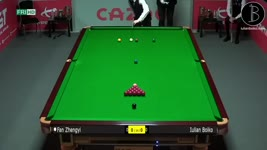
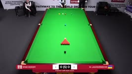
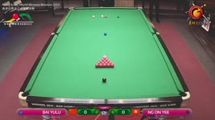
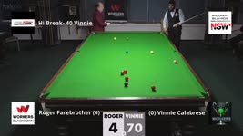
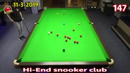
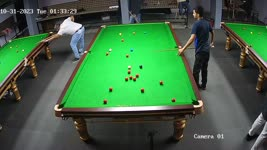
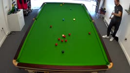
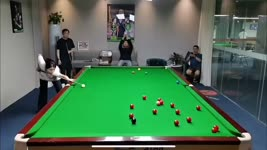

For the best experience, please open this webpage with Chrome browser
Intelligent Snooker Video Analyzer
Highlight Generation & Cue Ball Tracking
Open Local Snooker Video
Testing Demos under Various Camera and Lighting

World Championship 2023

World Snooker Federation 2022

Hongkong Snooker Club

Australian Snooker Club

Hi-End Snooker Club Thailand

Indian Snooker Club

Snooker Table at Home

Practice Room in China
Snooker Video Analyzer demonstrates exceptional robustness, successfully processing footages captured across diverse cameras, angles, and lighting
© 2025 -
中文
–
Analyze Video
Detecting table area -
0%
Next
>>
Generating highlights -
0% - 0
Shots
Stop
<<
0 / 0
>>
Play